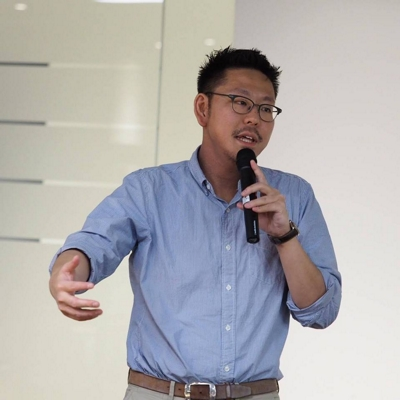
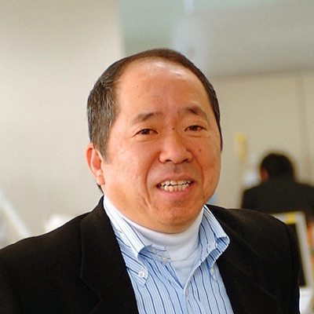
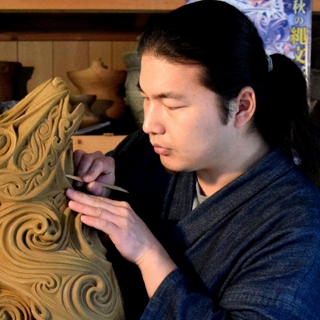
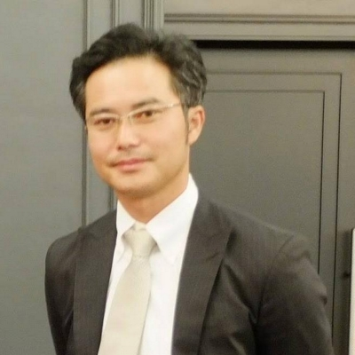
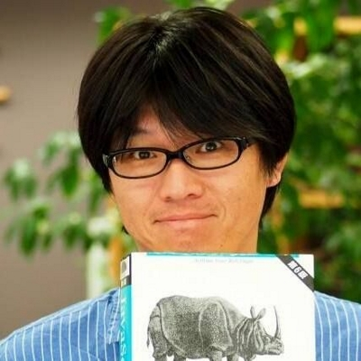
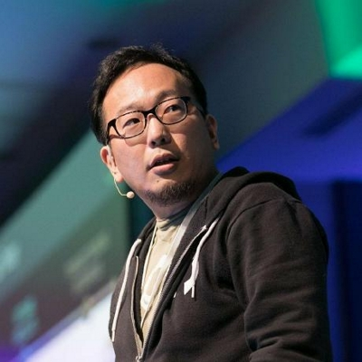

セッション内容
タイムテーブル
講演者名敬称略。
※スケジュールは一部調整中です。変更になる可能性があります。
| 09:30 – 10:00 | 受付 | |
|---|---|---|
| 10:00 – 10:10 | オープニング | |
| 10:10 – 11:10 | 60分 | したたか？天然？なんかうまくやってるITエンジニアの生存戦略 伊藤 淳一 |
| 11:10 – 11:20 | 休憩 | |
| 11:20 – 12:10 | 50分 | スポンサーセッション |
| 小売-エンジニア-企画・設計-マーケと情報爆発が僕のキャリアに与えた影響について 中村哲也 |
||
| エンジニア生存戦略〜地方エンジニアがこの先生きのこるには〜 田中孝明 |
||
| 手持ち10万円から始めた年商8億円のITビジネス 中山博光 |
||
| ぼくらがかんがえたさいきょうのリモート雑談環境 逸見誠 |
||
| 5分でわかるサブスレッド 古谷雅勝 |
||
| PR動画 Forkwell |
||
| 12:10 – 13:30 | 昼休憩 | |
| 13:30 – 14:00 | 30分 | 縄文とIT、美と技術 ボレロ村上（村上原野） |
| 14:00 – 14:10 | 休憩 | |
| 14:10 – 14:40 | 30分 | 農業をやってみた ひら |
| 14:40 – 14:55 | 休憩 | |
| 14:55 – 15:25 | 30分 | 地方の受託会社の会社員の派手めな業務外活動とその効用 前川昌幸 |
| 15:25 – 15:40 | 休憩 | |
| 15:40 – 16:40 | 60分 | ゼロから始める技術書執筆 湊川あい（Minatogawa Ai） |
| 16:40 – 16:55 | 休憩 | |
| 16:55 – 17:55 | 60分 | 日本にいながら、GitHubberであるとはどういうことか 池田尚史 |
| 17:55 – 18:30 | クロージング |
講演者プロフィール
- したたか？天然？なんかうまくやってるITエンジニアの生存戦略
-
もともとミュージシャンになりたくて就職する気などさらさらなかった私が、なぜかプログラマになり、14～15年経って田舎でリモートワークしたり、Rubyの本を執筆したりするようになりました。
そういえば私は今年で41歳になりますが、「35歳定年説？ああ、そんな言葉もあったねー」というぐらい、今でも現場でコードを書き続けています。
そんな私に明確な生存戦略はあったのでしょうか？
「ふと気づいたらこうなっていた」というのが率直な感想ですが、もしかしたら気づかぬうちにしたたかな生存戦略を遂行してきたのかもしれません。
私のITエンジニアとしてのキャリアをふりかえりながら、一緒に「伊藤さんの生存戦略」を考察してみましょう。
※みなさんからのご質問を事前に受け付けています。質問フォームはこちらです。講演者プロフィール
伊藤淳一
株式会社ソニックガーデン プログラマ
1977年生まれ。大阪府豊中市出身、兵庫県西脇市在住。
学生時代はミュージシャンを志し、就職もせずにバンド活動を続けていたが、ひょんなきっかけでIT業界に就職。
SIer、社内SEを経て、2012年から株式会社ソニックガーデンでRubyプログラマとしてのキャリアをスタート。
ブログやQiitaなどで公開したプログラミング関連の記事多数。説明のわかりやすさには定評がある。
著書に「プロを目指す人のためのRuby入門」（技術評論社）、訳書に「Everyday Rails - RSpecによるRailsテスト入門」（Aaron Sumner 著、Leanpub）がある。
- 小売-エンジニア-企画・設計-マーケと情報爆発が僕のキャリアに与えた影響について
-
2008年に小売業界からIT業界に転職を機に求められるスキルが大きく変わりました。
その後2011年を境にデジタルデータが爆発的に増加している中で、私自身が今求められるスキルのお話させて頂き、『売切』から『継続』、『独占』から『共創』、『グッズ』から『サービス』などの変化を感じて、現在のコミュニティマネージャというキャリアを選択したかをお話させて頂きたいと思います。講演者プロフィール
中村哲也
CloudGarageコミュニティマネージャー、ITIL Expert
花屋、家具屋を経て、IT知識ゼロからIT企業に就職
コールセンター、インフラエンジニア、サービス企画をへて
ITILベースのサービス設計に従事
現在は、自社クラウドサービスのコミュニティマーケティングおよびパートナープログラムの企画運営。
- エンジニア生存戦略〜地方エンジニアがこの先生きのこるには〜
-
20代前半までを大都会岡山で過ごし、エンジニア職への就職をキッカケに愛知、広島、東京、福岡を転々としてきました。
現在はクラスメソッド福岡オフィスで勤務しています。
地方都市ならでは苦労もあれば、東京には無い発見もありました。
皆様の今後の一助になるような話をしたいと思います。講演者プロフィール
田中孝明
クラスメソッド株式会社（サーバーレス開発部／モバイルアプリサービス部）
大都会岡山出身、福岡在住、福岡オフィス勤務。
愛知、広島、東京などに住んでいました。アプリ開発、サービス開発などのプロジェクトを経てiOSエンジニアとしてクラスメソッドにjoin。
最近ではサーバーレス開発部のお手伝いをやってます。
- 手持ち10万円から始めた年商8億円のITビジネス
-
佐賀県生まれで縁もゆかりもない岡山で㈱リゾームを創業。
IT知識ゼロの脱サラ社長でも目指せた、未来創造企業。
その商品づくり、お客様づくり、人づくりの実践と思い。講演者プロフィール
中山博光
株式会社 リゾーム 代表取締役社長
佐賀県生まれ
佐賀県唐津市の百貨店 販売促進業務
青木雄二デザイン事務所勤務
マイカル(旧ニチイ)販売促進・経営企画業務
平成3年 株式会社リゾーム設立
現在国内2800ショッピングセンターの情報活用事業を推進中
- ぼくらがかんがえたさいきょうのリモート雑談環境
-
昨今、リモートワークが話題ですが弊社の開発メンバーはリモートで働いてるメンバーも多いです。
弊社ではリモートによってコミュニケーションが不足しないようにリモートで雑談をしています。
今回はその時に使用している「ぼくらがかんがえたさいきょうのリモート雑談環境」についてお話しようと思います。講演者プロフィール
逸見 誠
株式会社クレオフーガ Engineering Manager
岡山生まれの岡山育ち。生まれてからずっと岡山に引きこもってます。
地元岡山のSIerでの勤務を経て、2014年1月にクレオフーガに転職し、現在は主にフロントエンドを担当。
オープンセミナー岡山、Okyama.rb、中国地方DB勉強会(岡山スタッフ）などの岡山の色々な勉強会のお手伝いをしています。
- 5分でわかるサブスレッド
-
岡山市にも事務所を構えた株式会社サブスレッドを岡山事務所成分多めでご紹介します
講演者プロフィール
古谷雅勝
株式会社サブスレッド デベロップメント事業部
2017年10月より株式会社サブスレッドへ中途入社
- 縄文とIT、美と技術
-
創造への根源的欲求は人類古層の芸術から現代のソフトウェア技術までを貫いています。
縄文造形家（陶芸家）兼C++erの目から見た、技術と美術の不可分性についてお話しします。
キャリア戦略の参考には全くならない人生サンプルとしてお聞きください。講演者プロフィール
ボレロ村上（村上原野）
縄文造形家，猪風来美術館 陶芸講師
中３女子です。本業は縄文造形家で、岡山県新見市の法曽で焼き物をしています。趣味はC++でコンパイル時処理をすること。constexpr で 様々な機能を実装した Sprout C++ Library を Github で公開もしています。
- 農業をやってみた
-
6年ほど前から農業をはじめ、現在は専業農家です。
以前は主にLinuxカーネルを専門としたソフトウェアエンジニアでした。ソフトウェアから農業へ、数々の失敗を経験しながら得た知見をお話したいと思います。講演者プロフィール
ひら
ひら農場
カーネルが好きな人。LinuxKernelHackJapanの管理人。大規模CodeReading手法「ひらメソッド」を提唱。現在、農家
- 地方の受託会社の会社員の派手めな業務外活動とその効用
-
いわゆる「地方のウェブ制作会社に勤務する会社員」の私ですが、全国の色んな所で講師として招かれたり、書籍の執筆をしたりしています。
そういった活動を「どうして」「どうやって」行なうようになったのか、「『その気』のある」あなたはぜひ参考にしてください。
また、それらを通して会社員としての私にどういった効用があったかも振り返ります。ひょっとするとあなたも『その気』になるかもしれません。
あくまでも個人の視点で語りますが、あなたの生存戦略のロールモデルに一部でも取り入れてもらえるようにお伝えします。
講演者プロフィール
前川昌幸
株式会社イー・ネットワークス マークアップ/フロントエンド/サーバサイドエンジニア
CPI エバンジェリスト
岡山県在住。イー・ネットワークス所属。CPI エバンジェリスト。okayama-js主宰。WordBench倉敷モデレーター。職域はサーバーセットアップ・保守、サーバーサイドプログラミング、マークアップ、フロントエンドエンジニアリング、プロジェクトマネージャー、企画、ディレクションなど。
主な書籍として、『プロが教えるレスポンシブWebデザイン 現場のメソッド』（MdN、共著・監修）、『Webサイト、これからどうなるの? キーワードから探るWeb制作の未来像』（MdN、共著）など。
- ゼロから始める技術書執筆
-
「技術書を書いてみたい、でも具体的にどうやればいいの？」という方へ、
「わかばちゃんと学ぶ」シリーズの著者、湊川あいがまったくの無名だった頃から技術書を出すまでにやったことをドドンと公開。
技術書執筆フロー、テストマーケティングのやり方についても共有します。こんな方にオススメ
- 技術書執筆に興味がある
- いつか作者欄に自分の名前がついたものを作りたい
- いつか「この分野といえばこの人！」といったオンリーワンの存在になりたい
講演者プロフィール
湊川あい（Minatogawa Ai）
フリーランスWebデザイナー/マンガ家/技術書執筆
「わかばちゃんと学ぶ Webサイト制作の基本」「わかばちゃんと学ぶ Git使い方入門」「わかばちゃんと学ぶ Googleアナリティクス」著者。2014年からインターネット上で「マンガでわかるWebデザイン」を公開していたところ、出版の声がかかり、書籍やWeb連載では、コーディング・解説文・マンガすべてを手がける。楽しみながら学べるコンテンツを制作・配信中。
- 日本にいながら、GitHubberであるとはどういうことか
-
GitHubはリモートワークの会社として有名です。
GitHubはよくある外資の日本法人と違い、アメリカ本社の意向に各国支社が振り回されるのではなく、各地域のリモートワーカーが力を合わせて1つのGitHubとして働いています。日本も例外ではありません。
このセッションでは、日本からグローバルベンチャーにリモートで貢献するとはどういうことか、そして英語オンリーの世界でどうサヴァイブしてきたのか、自身のキャリア戦略を語りながら、明らかにします。 プログラマーにとっては英語さえできれば、国境など関係なく面白いプロジェクトができる、ということを日々感じていますが、それを皆様にも実感していただき、参考にしていただければ幸いです。講演者プロフィール
池田尚史
GitHub Solutions Engineer, APAC
ソフトウェア開発者。大学卒業後、ITコンサルタントとしてキャリアをスタート。その後コンサルタントからプログラマーに転身し、パッケージソフトウェア開発、Webサービス開発を経て、2015年よりGitHubに所属している。